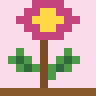

Using the site
Pick a category
Use the menu or the home page to open one of four category pages.
Open a plant card
Select the View details button. The plant's own page opens.
Read the facts
Look at names, family, features, uses, then the precautions box.
The four categories
Herbal Plants · พืชสมุนไพร
Plants used in home remedies, cooking and traditional knowledge.
Edible Plants · พืชกินได้
Vegetables, spices and fruit that fill the Thai table.
Economic Crops · พืชเศรษฐกิจ
Crops that support farms, craft and industry.

Ornamental Plants · ไม้ประดับ
Flowers and foliage for gardens, homes and celebrations.
Example: reading a plant page
Try it with holy basil
Open holy basil (กะเพรา). The breadcrumb at the top shows where you are. The facts box gives the Thai name, scientific name and family. Below it, the orange box lists precautions.
What is a scientific name?
It is a two-part Latin name, such as Ocimum tenuiflorum, that scientists everywhere use for the same plant.
Why are the pictures pixel art?
They are placeholders. Replace the files in images/plants/ with real photos and update the src in each plant page.